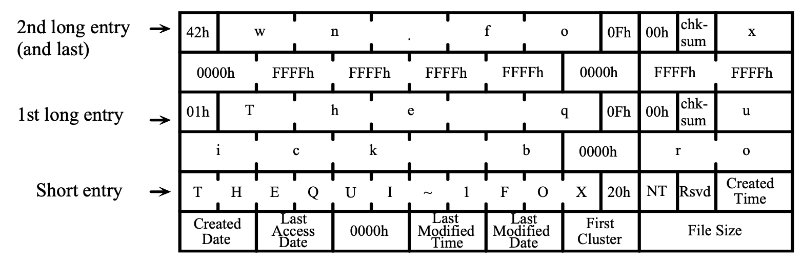
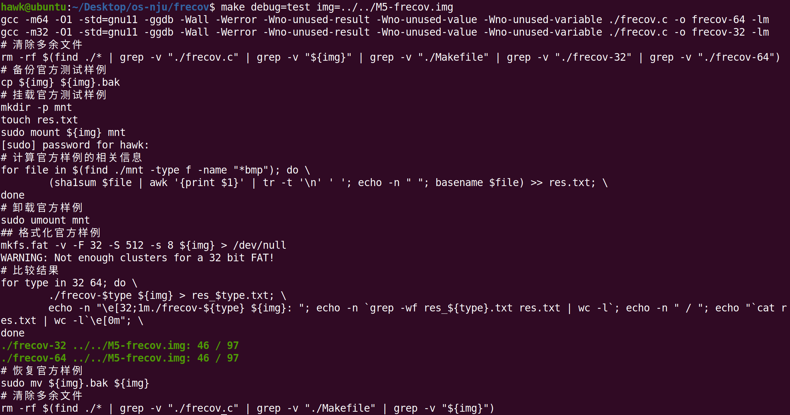

操作系统-设计与实现-八
前言
本篇博客完成M5的实验
M5 File Recovery(frecov)
实验背景
快速格式化
大家一定用操作系统提供的“格式化”功能对存储介质进行格式化——通常默认的选项是“快速格式化”；MacOS比较贴心的提供了更多的选项，例如更慢但更安全的选项。
实际上，虽然存储设备会比较大，但是格式化起来仍然非常快——如果把存储设备上的文件系统看做是一个数据结构(例如二叉树)，那么只要破坏数据结构的“根节点”，即root->left = root->right = NULL;，数据结构的其他部分也就永久地丢失了。这样，数据结构就完成了一次完美的“内存泄漏”。当然，因为整个数据结构都被摧毁，你也可以重置内存分配器的状态，这样所有磁盘上的空间就变得可以被分配，磁盘也就“焕然一新”(被格式化)了。
格式化磁盘的数据恢复
当然，快速格式化紧接着带来了一个问题：快速格式化(指针赋值)也意味着可以通过遍历存储设备(内存)的方式，将数据结构找回来。在本次试验中，就尝试恢复格式化后的FAT-32文件系统镜像。
实际上，仅是格式化，我们知道文件系统在实现文件/目录的删除操作时，也仅是从文件系统的数据结构中，抹去文件相关的信息，但是并不会实际将每一个保存数据的块删除。这大大增加了文件系统的性能，减少了磁盘的读写数量。这些系统里为了节约时间做出的操作，其实牺牲了一定程度的安全性——可以通过“扫描磁盘”的方式，一定程度地恢复出文件系统中已经被删除的文件。
当然，文件恢复是一个非常困难的open problem。不过，在本实验中，将进行一定的简化：只需要best-effort恢复经过了快速格式化的文件系统中bmp格式的图片即可。
当然，文件恢复也带来了滥用的可能。如从被盗的手机或二手处理手机中恢复隐私数据等。有些系统提供了“文件粉碎”的功能，即向磁盘上所有存储了该文件数据的块写入随机数据的方式避免文件被恢复，但是对于采用了copy-on-write方式存储数据的文件系统，甚至是Flash SSD的FTL，其会在硬件上保存有文件的拷贝。此时，使用加密的文件系统更好——将秘钥存储在操作系统都无法访问的数据区，存储文件时将文件数据加密后的密文存储在磁盘上，而读取文件时将磁盘上的密文解密后输出即可
实验描述
实现命令行工具frecov，给定一个格式化过的FAT32文件系统镜像，假设其中绝大部分文件都是以BMP格式存储的。请尽可能地从文件系统中恢复出完整的图片文件。命令行工具使用方法：
其中，FILE是一个FAT-32文件系统的镜像。每恢复一张图片文件(完整的文件，包含BMP头和所有数据)，调用系统中的sha1sum命令获得它的校验和，在标准输出中逐行输出图片文件的校验和，以及恢复出的文件名图片恢复任务
这个实验并不是让大家真正编写一个优秀的undelete工具。实验的目的是为了让大家体验一下：
- 怎样写代码分析文件系统镜像(顺便体会一下mmap的方便)；
- 怎样写代码分析一个实际的二进制文件：本次实验分析的是BMP格式的图片文件
- 想一个(也许是非常简单)的算法，恢复出文件系统中的BMP文件
本实验对这个问题做了相当的简化。
首先，实验保证文件系统镜像使用如下方法创建的(主要使用mkfd.fat工具)：
创建一个空文件(例如在下面的例子中，文件系统镜像的大小是64MiB)，例如fs.img
在这个空间文件上创建FAT-32文件系统
2
3
4
5
6
7
8
9
10
11
12
mkfs.fat 4.1 (2017-01-24)
WARNING: Not enough clusters for a 32 bit FAT!
fs.img has 64 heads and 32 sectors per track,
hidden sectors 0x0000;
logical sector size is 512,
using 0xf8 media descriptor, with 131072 sectors;
drive number 0x80;
filesystem has 2 32-bit FATs and 8 sectors per cluster.
FAT size is 128 sectors, and provides 16348 clusters.
There are 32 reserved sectors.
Volume ID is 6f71a2db, no volume label.注意实验使用的选项： -S 512表示sector大小是512，-s 8表示每个cluster有8个sectors。可以假设实验总是使用这种方式创建文件系统镜像(即硬编码这个信息)，或者可以写一个兼容FAT标准的frecov
挂载新创建的文件系统，并创建根目录下的DCIM目录
2
$ mkdir /mnt/DCIM此时，文件系统已经被挂载到/mnt目录下，并且有一个DCIM目录。之后，将在DCIM目录中进行多次如下操作。尽管图片文件分辨率、大小可能不尽相同，但都保证是真实世界中有意义的图片(而不是随机数生成器生成的随机数据):
- 向DCIM中复制图片文件(文件名为大/小写字母和数字、减号、下划线，以”.bmp”或”.BMP”结尾)
- 删除DCIM中的图片文件
- …….
- (反复操作之后，文件系统中可能存在一些碎片化的情况)
卸载文件系统镜像后，重新进行一次文件系统的快速格式化，通过使用同样的选项再次调用mkfs.fat：
此时的fs.img就是要恢复的文件系统镜像。此外，可以假设所有的BMP文件，都是使用PythonPIL库创建的24-bit位图
输出格式
试图恢复出DCIM目录下尽可能多的图片文件。对于每个恢复出的文件，输出一行，第一个字符串是该文件的SHA1 fingerprint(通过调用系统的sha1sum命令得到)，然后输出一个或多个空格，接下来输出图片的文件名即可，例如
2
3
1ab8c4f2e61903ae2a00d0820ea0111fac04d9d3 1yh0sw8n6.bmp
1681e23d7b8bb0b36c399c065514bc04badfde79 2Kbg82NaSqPga.bmp
实验标准
即按照实验描述中的输出格式输出即可(40字节的sha1sum，之后是文件名)
实验指南
FAT32文件系统
这里有一份Microsoft FAT Specification的文档。
根据文档可以知道，FAT文件系统是由一些头部信息(元数据)、FAT(文件分配表)和数据(cluster，微软的官方翻译是”簇”)组成的。如果尝试做一些分析，很容易知道：
- FAT文件的头部是可用的——实验使用同样的方式进行两次格式化；
- FAT表将被清空，此部分的数据相当于全部丢失；
- 数据区几乎没有变化——实验执行的是快速格式化。
接下来，就可以开始照抄手册，进行FAT文件系统的解析了，例如手册中已经详细地规定好了FAT32文件系统前512个字节的格式，不放将其解释成一个结构体：
1
2
3
4
5
6
7
8
9struct fat_header {
u8 BS_jmpBoot[3];
u8 BS_OEMName[8];
u32 BPB_BytsPerSec: 16;
u32 BPB_SecPerClus: 8;
...
u8 padding[420];
u16 signature;
} __attribute__((packed));
抄手册很容易抄错？不要忘记assert(sizeof(fat_header) == 512)。然后，就可以神奇地发现，如果使用mmap系统调用将磁盘映射到地址空间中，例如返回disk，那么就可以直接访问磁盘镜像头部的元数据了:
1 | panic_on(sizeof(struct fat_header) != 512, "bad header"); |
这个时候，就可以真正的在内存里任意“把玩”这个数据结构了。做一些实验，看看能不能在文件系统中找到一些有用的数据。
文件系统：存储在磁盘上的数据结构
读完手册以后，就可以理解——当完成mmap以后，其实就可以将文件系统理解成一个数据结构，而mmap返回的指针，就是指向
struct fat的指针
这个实验的要求，实际上是在header和clusters完好的前提下，尽可能地恢复出fat中指定的文件
BMP文件格式
为了完成实验，还需要了解BMP文件的格式。这里为了锻炼独立思考、查找资料的能力，关于BMP文件的细节，请STFW。
好消息是这部分需要查阅的资料很简单，由于实验的BMP都是以相同的方式创建的，因此可以忽略其中大部分的fields，只需要关注：
- bitmap存储区域开始的offset
- 图片的宽度和高度
扫描Clusters
在对于FAT32文件系统有了足够的认识以后，就可以发现，数据区的clusters，在实验情况中，可以分成一下几种情况：
- 目录文件，存储若干目录项(directory entry)，对应手册Section 6和Section 7描述的内容。注意Section 7是非常重要的，因为实验要求必须恢复出完整的文件名;
- BMP文件的头部，以424d(BM)开头；
- BMP文件的实际数据，按照3字节一组，按顺序存储了图片中的所有像素；
未使用的cluster
在FAT表被清除后，已经无法根据FAT恢复出目录的树状结构了。因此接下来要做的是一个分类问题：需要依次扫描磁盘中的所有clusters，并将它们标记为以上4类。这里不需要使用任何机器学习的知识——可以手工硬编码一些特征，就足够完成识别了，例如目录文件里总是包含大量的BMP字符，这些是数据和bitmap文件头所没有的。不需要做得100%准确，因为实验只要求恢复相当一部分文件即可；但是要小心地编写健壮的代码，使得分类错误发生时，程序不会发生太大的问题——程序很可能在错误分类时(例如将位图数据解析成目录时)，由于非法的输入而崩溃
图片数据恢复
接下来，需要的是恢复目录文件中的目录项，从而得到文件名。手册上对目录文件中的目录项给出了精确的定义。

当需要写代码解析文件时，手册就比blog posts靠谱得多了。在这里，要小心目录项可能跨过cluster的情况——当然简单起见，可以放弃这个文件的恢复，只要程序不会因此崩溃就行
当恢复出一个目录项以后，不仅得到了正确的文件名，而且得到了一个非常有用的信息：这个文件名对应的cluster ID。可以根据这个块的编号，找到一个保证是BMP header的cluster——可以和扫描的clusters的分类结果进行匹配，如果这个cluster不是一个bitmap header，则需要放弃该文件的恢复
接下来的工作就是恢复图片的剩余部分！最简单地，可以假设图片剩下的部分(clusters)都连续地存储在文件中。因此，只需要知道文件的大小(这个信息在目录项中也有)，就可以直接恢复出一张图片了
当然，如果希望做得更好一些，注意到bitmap是按照行优先顺序逐个存储像素的。在默认情况下，可以直接把连续的下一个cluster纳入到恢复的图片文件中。但与此同时，也可以检查“加入”的这些像素是否符合图片在视觉意义上的合理性。例如，在现实世界中的图片大多是“连续”变化的，即绝大部分相邻的像素，像素值都不会发生剧烈的变化。这样的想法其实对应了对图像在二维空间上进行求导(gradient)，而大部分像素的导数都是很小的。

如果在拼接时，检测到了异常，不妨可以去所有的cluster中寻找能够最好地拼接在当前cluster之后的数据。使用一个简单的贪心算法就可以获取很不错的数据恢复结果
计算校验和
终于，这里得到了文件名、文件的大小以及文件的所有数据——是时候将校验和进行输出了。在该实验中，需要调用外部工具sha1sum计算校验和。sha1sum的命令行工具可以从stdin(或者文件)读取数据，然后把hash digest输出到标准输出：
1
2$ echo "Hello, World" | sha1sum
4ab299c8ad6ed14f31923dd94f8b5f5cb89dfb54 -
sha1sum是一种计算字节序列“指纹”的算法。指纹(fingerprint)也称为校验和(checksum)，它是一个单向的hash function H，能把一个很大空间里的字符串映射到很小的空间中，并且目前而言，给定一个fingerprint后的字符串t，人类很难计算出一个字符串x，满足。指纹能在不传输整个文件的前提下，快速比较两个文件是否相等。除了校验文件的完整性之外，指纹还可以用来做数据的去重——例如大家在即使通信软件中传送文件时，服务器会用校验和检查是否已经存在文件的副本，如果是就可以立即结束传输(所以在上传一些别人可能已经上传过的文件时，会出现大文件“秒传”的情况)
如果不希望在这个实验中重复pipe-fork-execve的流程，popen可以很好地解决这个问题：可以将恢复出的文件写入文件系统中的任何位置(当然是某个临时目录)，然后用popen读取sha1sum的输出到缓冲区，最后将其输出即可
1
2
3
4fp = open("sha1sum /tmp/your-tmp-filename", "r");
panic_on(!fp, "popen");
fscanf(fp, "%s", buf);
pclose(fp);
调试你的程序
本次程序稍微有些长。可能需要一些logging，才能较好地帮助完成任务。记录日志时，要小心干扰到Online Judge。注意依然只能编写一个.c文件，因此适当的使用IDE和代码折叠，可以极大地提高编码效率。
除此之外，该实验中一个常见的问题是，很多时候并不知道程序“为什么”没有回复出正确的图片——虽然知道每一个图片的sha1sum，但是这些数值看起来像是随机的数字，只要有一个字节的差异，它们就会看起来完全不同。
一个调试的好办法是visualization：在调试时，将恢复出的图片输出到某个目录中，然后直接“肉眼”观察恢复的结果，就可以发现有些图片得到了正确的恢复，而有些没有。
实验环境
切换到master分支，然后从github上拉去M5实验即可
1
git remote add jyy https://hub.fastgit.org/NJU-ProjectN/os-workbench.git && git checkout master && git pull jyy M5
实验实现
下面是个人的思路及其实现，实验实现
整体实验的思路非常简单：
- 解析FAT文件系统
- 遍历Root Directory Region和File & Directory(Data) Region，找出目录项
- 解析目录项，找出BMP类型文件
- 计算BMP文件的sha1值，并输出即可
解析FAT文件系统
首先直接将待解析的文件系统映射入内存中，方便对文件系统的各种操作
然后，解析FAT文件系统就非常简单了——按照文档中的FAT数据结构，解析相关的字段即可
虽然如此，这里面有两个大坑
- FAT文件系统的数据结构
这里在实现FAT数据结构时，往往以结构体进行实现。在实现结构体的时候，与之前不同的是，需要以如下形式进行实现也就是添加packed属性，从而避免大于1字节的结构体的字段进行对齐操作，从而更改其在结构体中预设的偏移值1
2typedef struct BPB_COMMON {
}__attrubte__((packed)) BPB; 识别FAT类型
按照微软的手册，其通过计算CountOfClusters，既可以区分FAT12、FAT16或FAT32
然而并非如此——通过mkfs.fat命令生成的FAT文件系统，其不符合上述的规则。
因此，最终通过如下规则来识别FAT类型- 如果BPB_FATSz16字段为0，则为FAT32类型；否则进行下面的判断
- 如果CountOfClusters小于4085，则为FAT12；否则进行下面的判断
- 为FAT16
最终，这部分的逻辑实现如下所示
1
2
3
4
5
6
7
8
9
10
11
12
13
14
15
16
17
18
19
20
21
22
23
24
25
26
27
28
29
30
31
32
33
34
35
36
37
38
39
40
41
42
43
44
45
46
47
48
49
50
51
52
53
54
55
56
57
58
59
60
61
62
63
64
65
66
67
68
69
70
71
72
73
74
75
76
77
78
79
80
81
82
83
84
85
86
87
88
89
90
91
92
93
94
95
96
97
98
99
100
101
102
103
104
105
106
107
108
109
110
111
112
113
114
115
116
117
118
119
120
121
122
123
124
125
126
127
128
129
130
131
132
133
134
135
136
137
138
139/*
* 即FAT的BPB(BIOS Parameter Block)
* 位于Volume的第一个Sector
* FAT12、FAT16和FAT32的BPB不尽相同
*
* 这里特别说明一下，这里需要__attribute__((packed))，否则可能结构体对齐导致异常
*/
// 所有BPB共有的字段
typedef struct BPB_COMMON {
uint8_t jmpBoot[3];
char OEMName[8];
uint16_t BytsPerSec;
uint8_t SecPerClus;
uint16_t RsvdSecCnt;
uint8_t NumFATs;
uint16_t RootEntCnt;
uint16_t TotSec16;
uint8_t Media;
uint16_t FATSz16;
uint16_t SecPerTrk;
uint16_t NumHeads;
uint32_t HiddSec;
uint32_t TotSec32;
}__attribute__((packed)) BPB_COMMON;
//FAT12和FAT16的拓展字段
typedef struct EXBPB_FAT12{
uint8_t DrvNum;
uint8_t Reserved1;
uint8_t BootSig;
uint32_t VoIID;
uint8_t VoILab[11];
char FilSysType[8];
uint8_t padding1[448];
uint16_t Signature_word;
uint8_t padding2[512];
}__attribute__((packed)) EXBPB_FAT12;
typedef EXBPB_FAT12 EXBPB_FAT16;
//FAT32拓展字段
typedef struct EXBPB_FAT32 {
uint32_t FATSz32;
uint16_t ExtFlags;
uint16_t FSVer;
uint32_t RootClus;
uint16_t FSInfo;
uint16_t BkBootSec;
uint8_t Reserved[12];
uint8_t DrvNum;
uint8_t Reserved1;
uint8_t BootSig;
uint32_t VoIID;
uint8_t VoILab[11];
char FilSysType[8];
uint8_t padding1[420];
uint16_t Signature_word;
uint8_t padding2[512];
}__attribute__((packed)) EXBPB_FAT32;
BPB_DEF(12);
BPB_DEF(16);
BPB_DEF(32);
/*
* 参数1： const char *file_name
* 返回值： void *addr
*
* 即将传入的file_name，通过mmap映射入内存中
* 并将映射的基址返回即可
*
* 如果出现任何异常，直接输出异常信息，并退出即可
*/
static void*
file_load(const char *file_name)
{
/*
* 根据file_name
* 以只读权限打开文件
*/
int fd = -1;
assert((fd = open(file_name, O_RDONLY)) != -1);
/*
* 获取文件结构
* 根据该文件结构，获取文件大小
* 从而mmap该大小的文件即可
*/
struct stat sb;
assert(fstat(fd, &sb) != -1);
void *res = NULL;
assert((res = mmap(NULL, sb.st_size, PROT_READ, MAP_SHARED, fd, 0)) != NULL);
return res;
}
/*
* 参数1： const BPB_COMMON *addr
* 返回值: int type
*
* 即将传入的FAT文件系统的第一个sector进行解析，从而获取FAT类型
*
* 按照微软文档中所说，FAT类型仅仅和CountOfClusters相关，实际上和file命令结果不相同
*
* 这里采取如下算法进行判别
* 1. 如果BPB_FATSz16字段为0，则直接为FAT32
* 2. 根据CountOfClusters，判别是FAT12亦或是FAT16即可
*/
static int
get_fat_type(const BPB_COMMON *bpb)
{
assert(bpb != NULL);
if(bpb->FATSz16 == 0) { return FAT_TYPE_FAT32; }
uint64_t RootDirSectors = ((bpb->RootEntCnt * 32) + (bpb->BytsPerSec - 1)) / bpb->BytsPerSec,
FATSz = bpb->FATSz16,
TotSec = (bpb->TotSec16 != 0) ? bpb->TotSec16 : bpb->TotSec32,
DataSec = TotSec - (bpb->RsvdSecCnt + (bpb->NumFATs * FATSz) + RootDirSectors),
CountofClusters = DataSec / bpb->SecPerClus;
if(CountofClusters < 4085) { return FAT_TYPE_FAT12; }
else if(CountofClusters < 65525) { return FAT_TYPE_FAT16; }
return -1;
}
```
}__attribute__((packed)) BPB_COMMON;添加了packed属性，这里是为了避免结构体中大于1字节的字段的对齐，从而导致一些难以解释的错误
遍历Root Directory Region和Data Region
在上述解析完FAT格式后，即可获取Root Directory Region和Data Region在文件系统中的偏移和大小，从而进行解析
这里主要按照簇为单位，遍历上述区域，从而找到文件系统中所有的目录簇即可
因此该部分的核心就是判断簇为目录簇——要在确保不崩溃的情况下，尽可能准确的判断是否为目录
而每个目录簇由诸多目录簇构成，具有如下特征：
- 任何目录簇都不可能是空的——要么根目录包含一个ATTR_VOLUME_ID的普通目录项；要么包含.和..普通目录项；要么包含跨簇的剩余目录项
- 对于普通目录项，若其DIR_NAME字段为0，则当前目录项和该簇内后续的目录项所有字段皆为0;否则，其DIR_NTRes字段为0
对于长名目录项，其包含若干个连续的(逻辑连续)长名目录项和一个普通目录项，其中长名目录项们的LDIR_Type和LDIR_FstClusLO字段为0，并且LDIR_Ord字段翻序排列，第一个长名目录项的LDIR_Ord还需要添加0x40；而不同目录项并没有什么额外的特殊即可
因此，本实验判断簇为目录簇的逻辑就是验证上述的特征是否成立即可——这里需要特别小心跨簇的长名目录项，对于跨簇的后边的长名目录项来说，其无法验证相关的第一个长名目录项的LDIR_Ord的0x40特征，从而导致误将应该是目录簇的簇判别为非目录簇
该部分的实现逻辑如下所示
1
2
3
4
5
6
7
8
9
10
11
12
13
14
15
16
17
18
19
20
21
22
23
24
25
26
27
28
29
30
31
32
33
34
35
36
37
38
39
40
41
42
43
44
45
46
47
48
49
50
51
52
53
54
55
56
57
58
59
60
61
62
63
64
65
66
67
68
69
70
71
72
73
74
75
76
77
78
79
80
81
82
83
84
85
86
87
88
89
90
91
92
93
94
95
96
97
98
99
100
101
102
103
104
105
106
107
108
109
110
111
112
113
114
115
116
117
118
119
120
121
122
123
124
125
126
127
128
129
130
131
132
133
134
135
136
137
138
139
140
141
142
143
144
145
146
147
148
149
150
151
152
153
154
155
156
157
158
159
160
161
162
163
164
165
166
167
168
169
170
171
172//正常Directory Structure结构体
typedef struct SDIR {
char Name[11];
uint8_t Attr;
uint8_t NTRes;
uint8_t CrtTimeTenth;
uint16_t CrtTime;
uint16_t CrtDate;
uint16_t LstAccDate;
uint16_t FstClusHI;
uint16_t WrtTime;
uint16_t WrtDate;
uint16_t FstClusLO;
uint32_t FileSize;
}__attribute__((packed)) SDIR;
//Long File Name目录结构体
typedef struct LDIR {
uint8_t Ord;
char Name1[10];
uint8_t Attr;
uint8_t Type;
uint8_t Chksum;
char Name2[12];
uint16_t FstClusLO;
char Name3[4];
}__attribute__((packed)) LDIR;
typedef union
{
SDIR sdir;
LDIR ldir;
} DIR;
/*
* 参数1： const DIR *dir
* 返回值： int ans
*
* 即判断当前簇是否为目录项
* 这里为了避免程序崩溃，使用严格一点的检测方法——
*
* 保留字段是否正确、长名称是否正确、属性是否正确
*
* 如果当前簇是目录簇，则返回1即可
* 否则，返回0
*/
static int is_dir_entry(const DIR *dir) {
int entry_size = byte_per_clus / sizeof(DIR);
/*
* 排除没有使用过的簇
*/
if(dir->sdir.Name[0] == 0) {return 0;}
for(int i = 0; i < entry_size;) {
if(dir[i].sdir.Name[0] == '\xe5') {
/*
* 当前entry是无效的，直接略过即可
*/
++i;
}else if(dir[i].ldir.Attr == ATTR_LONG_NAME) {
/*
* 如果当前是长目录
* 则其不超过当前簇的后连续几个entry是有固定特征的
* 进行检测即可
*/
int size = dir[i].ldir.Ord;
if(dir[i].ldir.Ord > LAST_LONG_ENTRY) { size ^= LAST_LONG_ENTRY; }
size = size <= (entry_size - 1 - i) ? size : (entry_size - 1 - i);
//检查长名称目录项是否合规
if(dir[i].ldir.Type != 0 || dir[i].ldir.FstClusLO != 0) { return 0; }
for(int j = 1; j < size; ++j) {
if(dir[i + j].ldir.Ord != (size - j) || dir[i + j].ldir.Type != 0 || dir[i + j].ldir.FstClusLO != 0) { return 0; }
}
//检查短目录即可
if(i + size < entry_size && (dir[size].sdir.NTRes != 0 || dir[size].sdir.Name[0] == 0)) { return 0; }
i += size + 1;
}else if(dir[i].sdir.Name[0]) {
/*
* 普通的目录项
* 检查一下
*/
if(dir[i].sdir.NTRes != 0 || dir[i].sdir.Name[0] == 0) { return 0; }
++i;
}else {
/*
* 当前目录及以后目录都为空
*/
uint8_t *begin = (uint8_t*)(&dir[i]), *end = (uint8_t*)(&dir[entry_size]);
for(uint8_t *iter = begin; iter < end; ++iter) {
if(*iter) { return 0; }
}
break;
}
}
return 1;
}
/*
*
* 即依次扫描根目录 + 数据区
* 找到所有的目录——即名称中包含**bmp**文件即可
* 然后依次解析该目录即可，从而可以找到**bmp**文件的第一个cluster信息
*
*/
static void
scan()
{
uint8_t *scan_end = scan_region_addr + byte_of_scan_region;
/*
* 生成临时目录，从而存放恢复的图片信息
*/
char path[BUF_SIZE];
init_temp_name(path, "/tmp/frecov");
assert(mkdtemp(path) != NULL);
printf("[*] tmp_dir: %s\n", path);
for(uint8_t *clus = scan_region_addr; clus < scan_end; clus += byte_per_clus) {
if(is_dir_entry((const DIR*)clus)) {
/*
* 依次解析目录项即可
*/
const DIR *dir = (const DIR*)clus;
while(((uintptr_t)dir - (uintptr_t)clus) < byte_per_clus) {
char name[BUF_SIZE] = {0};
uint8_t attr = ATTR_NUL;
uint64_t clus = 0, size = 0;
dir = parse_dir_entry(dir, name, &attr, &clus, &size);
uint8_t *addr = (uint8_t*)(data_region_addr + byte_per_clus * (clus - 2));
if(attr == ATTR_FIL && is_bmp((const BMP*)addr, size)) { parse_bmp(name, addr, size, path); }
}
}
}
}
解析目录项
通过前面的步骤，已经可以找到所有的目录簇，则这里对照目录项的数据结构，依次遍历目录簇中的数据即可，从而获取代表文件的目录项中的文件大小、文件名称和文件第一个簇的位置等信息
这里同样有如下几个注意点
- 对于长名目录项，可能会跨簇——为了方便起见，当前无论解析到长名目录项跨簇的前半部分(包含相关的第一个长名目录项)，亦或是长名目录项跨簇的后半部分(包含相关的普通目录项)，直接舍弃掉，解析下一个有效的目录项即可
- 对于长名目录项来说，其LDIR_Name*字段中存储的是Unicode编码的文件/目录的名称。这里为了方便起见，直接默认名称全部为英文，从而方便名称的解析
对于普通目录项来说，若其DIR_Name的第一个字符为“/xe5”或“/x00”，则说明当前目录项已经被释放掉，不用进行解析即可
最终，这部分的实现逻辑如下所示
1
2
3
4
5
6
7
8
9
10
11
12
13
14
15
16
17
18
19
20
21
22
23
24
25
26
27
28
29
30
31
32
33
34
35
36
37
38
39
40
41
42
43
44
45
46
47
48
49
50
51
52
53
54
55
56
57
58
59
60
61
62
63
64
65
66
67
68
69
70
71
72
73
74
75
76
77
78
79
80
81
82
83
84
85
86
87
88
89
90
91
92
93
94
95
96
97
98
99
100
101
102
103
104
105
106
107
108
109
110
111
112
113
114
115
116
117
118
119
120
121
122
123
124
125
126
127
128
129/*
* 参数1： const DIR *dir
* 参数2： char *name
* 参数3： attr
* 参数4： fst_clus
* 返回值: const DIR*
*
* 参数1传入的是目录项，然后解析出目录名称，目录属性和对应的目录的第一个clus的地址以及文件大小，分别返回给对应的指针即可
* 最后返回下一个有效的DIR的指针。
*
* 这里需要考虑几个点
* 1. 长名称，以unicode存储
* 2. 跨cluster
*
* 实际上，在遇到跨cluster的目录且不连续，该解析是错误的
* 但是考虑到之后没有FAT表，所以这里就不处理这种情况了
*/
static const DIR*
parse_dir_entry(const DIR *dir, char *name, uint8_t *attr, uint64_t *fst_clus, uint64_t *file_size)
{
assert(dir != NULL && name != NULL && attr != NULL && fst_clus != NULL && file_size != NULL);
if(dir->sdir.Name[0] == '\xe5') {
/*
* 该目录项被FREE了
*/
*attr = ATTR_NUL;
return &dir[1];
}else if(dir->sdir.Name[0] == 0){
/*
* 该目录项和以后的目录项都是空目录项
*/
*attr = ATTR_NUL;
return NULL;
}else if(dir->sdir.Attr == ATTR_LONG_NAME) {
/*
* 如果Attr为ATTR_LONG_NAME，则为长名称
*
* 这里做简单处理，认为任何一个目录项的ldir个数小于0x40个，
*
* 如果ord小于LAST_LONG_ENTRY，则说明为跨簇的长名称，直接返回到下一个即可
* 否则，获取LDIR的个数，可以简单的通过ord ^ 0x40获取
*/
//跨簇，则直接返回到下一个即可
if(dir->ldir.Ord < LAST_LONG_ENTRY) {
attr = ATTR_NUL;
return &dir[dir->ldir.Ord + 1];
}
int size = dir->ldir.Ord ^ LAST_LONG_ENTRY;
/*
* 根据前面的分析
* 解析到跨cluster的目录项，会出现错误
* 则这里不解析即可
* 如果检测到异常，则直接终止
*/
for(int i = 1; i < size; ++i) {
if(dir[i].ldir.Ord != (size - i) || dir[i].ldir.Attr != ATTR_LONG_NAME || dir[i].ldir.Type != 0 || dir[i].ldir.FstClusLO != 0) {
attr = ATTR_NUL;
return NULL;
}
}
if(dir[size].sdir.Attr == LAST_LONG_ENTRY || dir[size].sdir.NTRes != 0) {
attr = ATTR_NUL;
return NULL;
}
//解析目录名称，这里默认全英文名称
int name_size = 0;
for(int i = 0; i < size; ++i) {
for(int j = 0; j < 10; j += 2) { name[name_size++] = dir[size - 1 - i].ldir.Name1[j]; }
for(int j = 0; j < 12; j += 2) { name[name_size++] = dir[size - 1 - i].ldir.Name2[j]; }
for(int j = 0; j < 4; j += 2) { name[name_size++] = dir[size - 1 - i].ldir.Name3[j]; }
}
name[name_size] = 0;
//解析其余信息
if(dir[size].sdir.Attr == ATTR_DIRECTORY) { *attr = ATTR_DIR; }
else { *attr = ATTR_FIL; }
*fst_clus = (dir[size].sdir.FstClusLO) | (((uint64_t)dir[size].sdir.FstClusHI) << 16);
*file_size = dir[size].sdir.FileSize;
if(dir[size + 1].sdir.Name[0] == 0) { return NULL; }
return &dir[size + 1];
}else {
/*
* 当前为正常的短目录项
* 则解析其名称即可
*
* 也就是分别判断前8字符和后3字符即可
* 这里需用通过iconv，将其转换为unicode
*/
int name_size = 0, idx = 0;
for(; idx < 8 && dir->sdir.Name[idx] != ' '; ++idx) { name[name_size++] = dir->sdir.Name[idx]; }
if(name_size == 8 && dir->sdir.Name[idx] != ' ') {
name[name_size++] = '.';
for(; idx < 11 && dir->sdir.Name[idx] != ' '; ++idx) { name[name_size++] = dir->sdir.Name[idx]; }
name[name_size++] = 0;
}
//解析其余信息
if(dir[0].sdir.Attr == ATTR_DIRECTORY) { *attr = ATTR_DIR; }
else { *attr = ATTR_FIL; }
*fst_clus = (dir[0].sdir.FstClusLO) | (((uint64_t)dir[0].sdir.FstClusHI) << 16);
*file_size = dir[0].sdir.FileSize;
if(dir[1].sdir.Name[0] == 0) { return NULL; }
return &dir[1];
}
return NULL;
}
解析BMP文件
经过前面的步骤，我们获取了可能的BMP文件的文件名称、文件数据的第一个簇的位置和文件大小。
下面我们就解析文件，从而获取BMP文件即可
- 检测BMP格式
这里的方法和前面检验FAT文件系统的方法非常类似——就是通过验证文件头特征，从而进行检测。
当然，对于该实验情况，还可以额外验证BMP格式的文件头中size字段是否和前面目录项中解析出来的文件大小相等 解析BMP文件数据
虽然实验指南中给了一些非常巧妙的方法，这里由于时间关系，就默认BMP文件数据是连续存放在文件系统中的。也就是前面获取的文件数据的第一个簇位置，其后面紧接着解析出的文件大小的数据，就是该BMP文件的所有数据当我们获取了BMP文件的数据后，就将其数据输出到临时文件中，然后根据实验指南的提示，通过
popen()，调用sha1sum命令获取文件的sha1值，然后数据即可这部分实现的逻辑如下所示
1
2
3
4
5
6
7
8
9
10
11
12
13
14
15
16
17
18
19
20
21
22
23
24
25
26
27
28
29
30
31
32
33
34
35
36
37
38
39
40
41
42
43
44
45
46
47
48
49
50
51
52
53
54
55
56
57
58
59
60
61
62
63
64
65
66
67
68
69
70
71
72
73
74
75
76
77
78/*
* 参数1： const char *name
* 参数2： uint8_t *addr
* 参数3： uint64_t size
* 参数4: char *dir
*
* 即将addr出，大小为size字节，文件名称为name的bmp图片解析出来
* 将临时文件输出到path对应的目录中，并且
* 这里简单起见，默认cluster是连续存放的，则直接获取即可(估计准确率比较低，但是懒得在实现基于边界，查找可能的cluster)
*/
static void
parse_bmp(const char *name, const uint8_t *addr, const uint64_t size, const char *dir)
{
/*
* 生成临时文件，存放解析出来的bmp文件
*/
char buf[BUF_SIZE] = {0}, path[BUF_SIZE] = {0};
int fd = 0, write_total_size = 0;
sprintf(buf, "%s", dir);
strcat(buf, "/");
init_temp_name(path, buf);
assert((fd = mkstemp(path)) != -1);
while(write_total_size < size) {
int write_size = write(fd, addr + write_total_size, size - write_total_size);
assert(write_size >= 0);
write_total_size += write_size;
}
close(fd);
printf("[*] write the %s to %s\n", name, path);
/*
* 通过popen
* 执行sha1sum [file]
* 从而方便快捷的获取该文件的sha信息
*/
FILE *handle = NULL;
char cmd[BUF_SIZE] = {0};
sprintf(cmd, "sha1sum ");
strcat(cmd, path);
assert((handle = popen(cmd, "r")) != NULL);
/*
* 获取fd中的sha1输出
* 然后拼接文件名即可
*/
buf[40] = 0;
fscanf(handle, "%40s", buf);
printf("%s %s\n", buf, name);
fclose(handle);
}
/*
* 参数1： const BMP *bmp
* 返回值： int res
*
* 即判断bmp对应的是否为BMP头文件
* 通过判断魔数和文件大小进行判断
*
* 如果是bmp文件格式，则返回1
* 否则返回0即可
*/
static int
is_bmp(const BMP *bmp, const uint64_t size)
{
if(bmp->magic_number[0] == 0x42 && bmp->magic_number[1] == 0x4d && bmp->size == size) { return 1; }
return 0;
}
实验结果
下面是测试官方样例的结果
